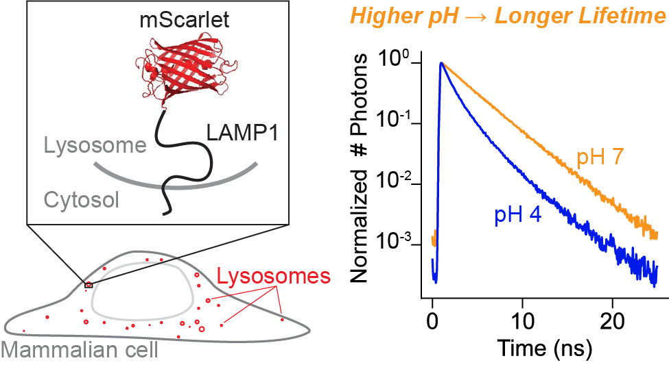

This project is maintained by Julia Lazzari-Dean in the York lab, and was funded by Calico Life Sciences LLC
*Permanent email: julia.lazzaridean+mScarlet_lifetime@gmail.com
†Permanent email: maria.del.mar.ingaramo+mScarlet_lifetime@gmail.com
Pre-print published: March 24, 2022
You are currently reading a rendered HTML version of a Zenodo publication. When citing this work, please refer to the Zenodo version and cite as: Julia R. Lazzari-Dean, Maria Clara Ingaramo, John C.K. Wang, John Yong, Maria Ingaramo. mScarlet fluorescence lifetime reports lysosomal pH with high precision. Zenodo (2022) DOI: 10.5281/zenodo.6363342
The lysosome maintains a highly acidic pH, which is critical for successful lysosomal catabolism. Lysosomal pH (pHlys) is difficult to measure because of the simultaneous need for a sensor with large dynamic range, genetic targetability, low pKa, and a quantitative readout. Here, we demonstrate that the fluorescence lifetime of the mScarlet-LAMP1 fusion protein quantitatively reports lysosomal pH, exhibiting a large dynamic range and a pKa well-tuned for the lysosome. Because fluorescence lifetime is an intrinsic property, pH measurements can be achieved in a single fluorescence channel. mScarlet-LAMP1 lifetime allows for individual lysosome-resolved recordings, a critical advance in describing and understanding lysosomal pHlys heterogeneity. Using this biosensor, we quantify heterogeneity of pHlys in cultured cells at rest and over time during drug treatment. We anticipate that mScarlet-LAMP1 will enable new insights into the diversity of lysosomal physiology and ionic milieu.
Lysosomes are key organelles in nutrient homeostasis. They are the site of recycling and digestion of macromolecules, and they help to sense and maintain the balance between anabolic and catabolic processes [Li 2018]. The lysosomal lumen is highly acidic (pH \(\approx\) 5) relative to the cytoplasm (pH \(\approx\) 7), which sets up a proton gradient across the lysosomal membrane [Mindell 2012]. This proton gradient is largely maintained by the lysosomal V-ATPase, an ATP-driven proton pump, but recent work has also described a diversity of ionic currents, many without identified channels or transporters [Mindell 2012, Xu 2015]. Low lysosomal pH (pHlys) is necessary for proper function, as most of the lysosomal hydrolases require an acidic environment [Xu 2015]. Misregulation of lysosomal pH has been shown to cause inflammation and iron deficiency [Yambire 2019], and it has been linked to Parkinson’s disease and other progressive age-related disorders [Li 2018, Nixon 2020, Lee 2015].
Further adding to the complexity of lysosome biology, a typical mammalian cell contains hundreds of lysosomes, each with potentially diverse properties and roles. Heterogeneity among lysosomes has been described for many attributes, including size, location within the cell [Cabukusta 2018], and movement speed [Zhao 2018]. For pH specifically, progressive acidification along the endolysosomal pathway has been reported [Mellman 1996], as well as some heterogeneity in pH among lysosomes themselves [Bright 2016]. Some studies have also reported spatial patterning of pHlys within cells [Johnson 2016, Webb 2021], although others have not seen such distributions [Ponsford 2020]. Such discrepancies, and our incomplete description of pHlys distributions in space and time, stem in part from limitations in quantification possible with current pHlys sensors.
Despite its biological importance, measuring pHlys at the individual lysosome level in live cells remains challenging [Wolfe 2013]. To our knowledge, no existing pHlys sensor excels in all four of the following categories, which fundamentally limits the scope of pHlys measurements.
Fluorescence intensity of a single-color sensor is sometimes used to record pH, but it is not “self-normalizing.” Many biosensors change their fluorescence intensity (brightness) in response to pH, and intensity can be conveniently measured on many microscopes. However, fluorescence intensity is an extrinsic property, meaning that the signal from 10 fluorophores with 1x brightness can be confused with the signal from 5 fluorophores with 2x brightness. Furthermore, properties of the instrument also affect fluorescence intensity, e.g. the amount of illumination light applied to the sample and the efficiency with which the resulting fluorescence is detected. Therefore, without a self-normalizing strategy, intensity alone is a poor proxy for pH.
One strategy to improve quantitation is to add a second, spectrally distinct fluorophore to correct for sensor concentration [Webb 2021, Ponsford 2020, Chin 2021]. For this to be accurate, the second fluorophore must be (1) pH independent, (2) at known stoichiometry with the sensing fluorophore, and (3) stable over the course of the measurement. These two-color tools can be deployed relatively easily on simple fluorescence microscopes, making them attractive for higher throughput measurements. However, the above assumptions are often violated, leading to potentially erroneous results. Most (if not all) fluorescent proteins exhibit some pH dependence, and the lysosome is a proteolytic compartment, making the likelihood of cleavage of at least one of the two fluorophores fairly high. In addition, differential photobleaching generally leads to loss of one fluorophore faster than the other over time [Hou 2014].
A more reliable self-normalizing approach is to record the fluorescence lifetime instead of the fluorescence intensity of the sensor. Fluorescence lifetime, or the amount of time that a fluorophore remains in the excited state before emitting a photon and decaying to the ground state, is largely independent of fluorophore concentration and illumination intensity [Yellen 2015]. Lifetime is related to quantum yield and is increasingly being deployed in a sensing context (e.g. [Yellen 2015, Lazzari-Dean 2019, Lee 2009, Zheng 2015]); it can be measured on specialized microscopes and flow cytometers. There has been considerable interest in the use of fluorescent proteins’ lifetime to measure cytosolic pH [Schmitt 2014, Poëa-Guyon 2013, Haynes 2019, Linders 2022], but these implementations all have pKas close to neutral pH (>6), and many suffer from limited dynamic range (<0.5 ns total change in lifetime).
Here, we investigate fluorescence lifetime imaging (FLIM) of the protein mScarlet [Bindels 2017] for pH sensing in lysosomes. We note that the use of mScarlet or its derivatives to sense pH has been explored in other contexts: pHmScarlet, a derivative of mScarlet with a pKa of 7, has been reported [Liu 2021], and some of the authors here recently investigated mScarlet lifetime in yeast [Lewis 2021]. To our knowledge, however, mScarlet has not been previously characterized and deployed as a pHlys reporter.
In this work, we show that mScarlet has a large dynamic range and an ideally tuned pKa for pHlys recordings (reported pKa of 5.3 [Bindels 2017]). This, together with its genetic targetability and red-shifted spectrum, makes it a best-in-class pHlys sensor. We demonstrate the use of mScarlet lifetime in monitoring the effects of media change or V-ATPase inhibition on pHlys both in endpoint assays and longitudinally. Notably, mScarlet lifetime is able to resolve pHlys at the single lysosome level, uncovering dramatic pHlys heterogeneity within individual cells at steady state and in response to perturbation. We anticipate that mScarlet lifetime will open up new avenues in studies of pHlys and its heterogeneity.
We selected mScarlet as a low pH sensing domain because of its reported pKa of 5.3 and its long lifetime [Bindels 2017], as well as results from a preliminary screen we conducted in yeast (see Supplementary Text). To further investigate mScarlet as a lifetime-based pHlys sensor, we characterized its pH sensitivity in vitro using fluorescence lifetime imaging (FLIM). We record a pKa of 5.6 for the lifetime of purified mScarlet (Figure 1A), in good agreement with previous reports [Bindels 2017]. We also observed a nearly two-fold increase in lifetime from pH 4 to pH 7.5 (mean arrival times of 2.05 ns and 3.65 ns respectively). Although various FPs have been previously demonstrated to have pH sensitive lifetimes [Schmitt 2014, Poëa-Guyon 2013, Haynes 2019, Linders 2022], we note that this total change of 1.6 ns in mean arrival time from pH 4 to pH 7.5 is the largest reported change to date in the lysosomal pH range. As a point of comparison, the recently reported lifetime-based RpHLuorin2 sensor for acidic vesicles exhibits a total change in lifetime of 0.4 ns in the same pH range [Linders 2022]. All other things being equal, mScarlet’s 4x increase in dynamic range relative to RpHluorin2 would enable detection of 4x smaller changes in pHlys, making mScarlet an excellent choice for a pHlys biosensor.
On a technical note regarding mScarlet lifetime, we observe a noticeable change in not only the rate but also the shape of the mScarlet fluorescence decay (Fig. S1) from pH 7.5 to 4. At high pH, mScarlet lifetime is approximately monoexponential, but at pH 4, we observe a multiexponential decay. This change in decay model poses a challenge for fitting, as FLIM data ideally should be fit to the same decay model in all conditions. To avoid artifacts from using different decay models, we opted to quantify all mScarlet lifetimes here with the mean photon arrival time (the first moment of the exponential distribution), which does not require a fit model.
Although fluorescence lifetime is generally more robust than fluorescence intensity, it still may respond to factors other than pH [Berezin 2010]. To check for this, we characterized the response of mScarlet lifetime to a panel of other analytes in vitro. We do not observe a change in lifetime with mScarlet concentration (Fig. S2), solution ionic strength, or concentration of Na+, Ca2+, Mg2+, K+, or Cl- (Fig. S3). We also observe nearly identical pH dependencies in two different buffers (phosphate buffer with added NaCl and citrate-phosphate-borate buffer with added KCl, Fig. S4). In our experience, temperature frequently affects fluorescence lifetime, but we found that changes in mScarlet lifetime with temperature were minimal in the range tested (23°C to 35°C). We observe a slight decrease in lifetime at high glycerol concentrations, which is likely attributable to an increase in refractive index (Fig. S5, discussed further in Supplementary Text). Overall, we find mScarlet lifetime to be unusually “well-behaved,” exhibiting minimal off-target sensitivity.
Encouraged by the excellent pH sensitivity of mScarlet lifetime in vitro, we targeted mScarlet to the lysosomal lumen by fusing it to the N terminus of the lysosomal membrane protein LAMP1. We selected LAMP1 as an anchor because it has been characterized and used successfully in previous pHlys sensing constructs, where it was shown to minimally perturb lysosomal properties [Webb 2021, Ponsford 2020]. We also included a prolactin signal sequence for targeting of glycosylated membrane proteins [Lingappa 1978] and a linker sequence between mScarlet and LAMP1 from the previously published pHlys sensor pHLARE [Webb 2021].
We then expressed this mScarlet-LAMP1 construct in U2OS cells via transient transfection and observed good lysosomal localization, as evidenced by colocalization with the SiR lysosome stain (Fig. S6). We also observe weak mScarlet-LAMP1 fluorescence at the plasma membrane, which has been attributed to lysosomal exocytosis [Reddy 2001]. As is common with transient transfection, we observed high variance in expression level across the cell population, and cells with very high expression displayed irregular endolysosomal morphology. Nevertheless, approximately half of the cells displayed normal endolysosomal morphology and sufficiently bright fluorescence for lifetime imaging; we imaged these cells. In separate experiments, we also tested lentiviral expression methods, which produced more consistent, lower expression levels (see below).
To determine the pH sensitivity of the mScarlet-LAMP1 fusion, we used an ionophore cocktail to control pHlys while we measured the fluorescence lifetime (Figure 1B-D). Lysosomes were permeabilized with 10 μM nigericin and 2 μM monensin for 10 minutes in high K+ imaging solutions ranging from pH 4.0 to 7.5. Similar to the in vitro studies, we observed a large change in lifetime (1.5 ns from pH 4 to 7.5), with low between-cell variability at each pH. Interestingly, we observed somewhat different exact values for mScarlet lifetime in lysosomes versus in pure protein (see Supplementary Text for further discussion).
Fluorescence lifetime imaging often requires longer exposures than fluorescence intensity imaging, as many photons must be collected to accurately determine the lifetime. Prior to collecting these data, we were concerned that lifetime might not be a viable technique in lysosomes, which are small and rapidly moving. Fortunately, the high brightness and red-shifted spectrum of mScarlet enabled us to quantify lifetime at individual lysosomes (Fig. 1C, D). The lifetime within and between ionophore-treated lysosomes was quite uniform, indicating low noise in the measurement. This is in contrast to our experience using two domain ratiometric biosensors, where we need to censor lysosomes displaying nonphysiological pH values, likely arising from preferential degradation of the normalizing or sensing domain (Fig. S7).
How small of a pHlys change can mScarlet-LAMP1 lifetime reliably quantify? This question is subtle because biosensors frequently exhibit nonlinear responses to analyte. Near the pKa, where mScarlet is most sensitive to pH, pH determinations will be more accurate because any noise will be smaller relative to the pH-related lifetime change. Conversely, at very high or very low pH, pHlys measurements will be less accurate. Importantly, the accuracy of the lifetime measurement will also depend on the number of photons collected. Therefore, improved pH resolution may be achievable at the cost of acquisition time. For these reasons, we have opted to report subsequent data in native lifetime units, along with any transformation into pH units.
Nevertheless, to get an estimate of resolution, we can approximate the lifetime-pH curve as linear near pH 5, with a slope of approximately 1 ns per pH unit in U2OS cells. We can then calculate the accuracy achieved with our acquisition settings from the standard deviation (SD) of the lifetime at a given ionophore-determined pH. For whole cell quantification, an SD of 0.1 ns is equivalent to 0.1 pH unit resolution near pH 5. For individual lysosome quantification, an SD of 0.2 ns is equivalent to 0.2 pH unit resolution near pH 5. These estimates are conservative, as we assumed the ionophores perfectly achieved the desired pH, but there likely is a small amount of variability even when the ionophores were present.
To reduce variability in expression and investigate mScarlet-LAMP1 in another cell background, we generated a stable reporter line in A549 cells using lentiviral transduction. Versus transient transfection in U2OS, the polyclonal mScarlet-LAMP1 A549 line displayed lower average fluorescence and no cells with irregular lysosomal morphology. These differences are likely attributable to the lower gene copy number and different promoter used (SFFV in A549 vs. CMV in U2OS). Expectedly, this lower expression resulted in lower photon counts in our pHlys images. Even among the brightest 10% of cells, individual lysosome measurements had 50% more noise (SD of 0.3 ns at pH 5 among 1733 lysosomes) than in U2OS cells. We suspect that further fine-tuning of the expression level or isolation of a monoclonal line with desired brightness could improve this result. Nevertheless, we observed a similar relationship between mScarlet lifetime and pH in the ionophore calibration experiment in the A549 cells (Fig. S8, Table S1), suggesting that the mScarlet-LAMP1 construct is a versatile and portable sensor for pHlys.
With this calibration in hand, we measured the distribution of pHlys present in unperturbed U2OS cells in complete growth media. We observe considerable heterogeneity in the pHlys of individual lysosomes, which is visible by eye in a fluorescence lifetime image (Fig. 2A, Fig. S9). Incubation with the lysosomal V-ATPase inhibitor bafilomycin A1 (BafA) neutralizes the pHlys, leading to a longer lifetime and higher pH (Fig. 2A-C, Fig. S10). We estimate that the average pHlys in control U2OS cells is 4.9, whereas in BafA treated cells it is ≥6.5.
These mScarlet-LAMP1 lifetime images map pHlys across the cell, allowing us to quantify the pHlys distribution (Fig. 2C). As expected, the addition of BafA makes pHlys more uniform within the cell, decreasing the standard deviation of mScarlet lifetime from 0.41 ns to 0.20 ns. This narrowing of the lifetime distribution with BafA indicates that different abundance or activity of the V-ATPase produced the majority of the pHlys heterogeneity at rest. As a caveat to interpreting these results, we note that there is likely some bias in our identification of lysosomes by segmenting the mScarlet-LAMP1 signal. This will necessarily affect the pHlys distribution we report in (at least) two key ways: (1) LAMP1 has been reported to stain nondegradative endolysosomal structures, so some of these may be included in our pHlys distribution [Cheng 2018]. (2) Smaller lysosomes, especially those that are more acidic, may not have sufficient signal to be identified as lysosomes by our segmentation algorithm. If this poses a particular concern, addition of other, pH-insensitive lysosomal stains such as SiR lysosome could be added to refine lysosomal identification.
We went on to evaluate whether there were spatial patterns in pHlys across the cell. Previous reports [Johnson 2016, Webb 2021] suggested that lysosomes in the cellular periphery might be deacidified, although some other studies have not reproduced that result [Ponsford 2020]. In our dataset, we do not observe clear differences in pHlys between the periphery and internal cellular regions (Fig. S11). A possible explanation for these different results among studies (using different pH biosensors) is that the two-color pHlys sensing systems can produce erroneous pH values due to degradation or mistargeting (as we observed in Fig. S7). An alternative explanation is that pHlys patterning across the cell occurs in cell lines or culture conditions different from the ones tested here. As such, the spatial organization of pHlys is worth revisiting in other model systems using a quantitative, single color pHlys sensor such as mScarlet-LAMP1.
Given the role of the lysosome in nutrient sensing, we investigated how changes in media or nutrient levels affect pHlys. We initially struggled with variability and irreproducibility in this experiment, as different batches of growth media produced different pHlys. We became concerned that perhaps glutamine (Gln) breakdown or issues with the stable Gln analog GlutaMAX (Gmax) in culture media were confounding our results. To determine the source of these issues, we grew U2OS cells in Gmax-containing DMEM, exchanged the media for DMEM with different supplements, incubated for 5 minutes, and then recorded pHlys with mScarlet-LAMP1 lifetime (Fig. 2D, Fig. S12). We observed dramatically elevated pHlys in fresh media supplemented by the manufacturer with Gln (Orig. Gln) versus supplemented fresh on the day of the experiment with Gln (Fresh Gln, median pHlys of 5.5 versus 4.9). In addition, media changing itself decreased the median pHlys from 5.1 to 4.9 (Spent Gmax vs. Gmax), even if the cells had only been in their current media for 24 hours. The removal of all DMEM supplements other than glucose (DMEM base) did not have a statistically significant effect on pHlys in this short time window (5 minutes).
A likely explanation for the striking pHlys elevation in media supplemented by the manufacturer with Gln is that Gln breakdown leads to the formation of ammonia, which rapidly accumulates in lysosomes and increases their pH. Importantly, none of the components we used were expired per manufacturer labeling. Similar changes in pHlys from glutamine breakdown products have been observed previously [Ohkuma 1978], and a quantification of Gln in commercial media revealed considerable levels of ammonia [Heeneman 1993]. As such, we strongly suggest that studies looking at pHlys use stable Gln analogs (e.g. Gmax). The effect of media change on pHlys is also interesting and could be attributed to either removal of waste products or addition of fresh nutrients. We hope to see future systematic studies of the effect of individual nutrients on pHlys over time to clarify this mechanism.
We next sought to determine whether mScarlet lifetime could be used to track pHlys dynamics in living cells. Although fluorescence lifetime imaging is increasingly employed as a live-cell imaging technique [Yellen 2015], it requires relatively large numbers of photons and is not trivial to deploy in longitudinal imaging. However, the high brightness and large signal change of mScarlet allows for pHlys measurements with relatively few photons, making it both gentle enough and fast enough for longitudinal recordings. We recorded pHlys every 5 minutes for one hour in cells treated with either DMSO control or 100 nM BafA (Fig. 3, Fig. S10, Fig. S13). Lifetimes recorded in control cells were stable over the 1 hour time period, and morphological changes corresponding to cell stress were not observed. Furthermore, we observed the expected increase in pHlys in the BafA treated cells, with the pHlys at 1 hour approaching the value recorded after a 5 hour incubation (Fig. 2).
Analysis of pHlys of the individual lysosomes over time revealed surprising heterogeneity. Instead of a gradual deacidification of all lysosomes, there appear to be lysosomes that are particularly vulnerable to BafA and deacidify almost completely within 5-10 minutes. Another lysosomal population remains acidic for almost the entire duration of the recording (Fig. 3B and Fig. S13). This range of susceptibilities likely results from differences in ionic composition and ion channel expression on the various lysosomes. Once BafA stops the V-ATPase, the rate of proton flow through other transporters or channels will determine how fast the lysosomes deacidify [Xu 2015]. The heterogeneity observed implies that the composition of channels and transporters differs considerably among lysosomes, suggesting that lysosomes may be more functionally heterogeneous than previously thought. The method described herein with mScarlet-LAMP1 provides both a tool and a clear motivation for follow-up investigations of lysosomal ionic heterogeneity.
The data obtained here provides a snapshot of pHlys, resolved by individual lysosome, at a series of time points. We did not track individual lysosomes over the one hour time course, although it would be interesting to do so. Because lysosomes move rapidly around the cell in three dimensions, it was not feasible with our current lifetime system (point-scanning confocal with time-correlated single photon counting) to track individual lysosomes in 3D. We emphasize that there is no fundamental principle preventing faster acquisition of lifetime data. Therefore, combining mScarlet-LAMP1 lifetime with a faster lifetime imaging setup, such as electro-optic wide-field FLIM [Bowman 2021] or a frequency-domain FLIM lightsheet microscope [Mitchell 2017], could enable fast volumetric lifetime imaging and lysosome tracking. We look forward to future instrumentation developments for fast FLIM to facilitate lifetime-based pHlys recordings.
Here, we have demonstrated that mScarlet lifetime is a sensitive and quantitative readout of pH, with an emphasis on its applications in the lysosome. As the most sensitive lifetime-based pHlys reporter to date, mScarlet lifetime elucideates subtle pH differences among lysosomes at rest and under drug stress. Nevertheless, the molecular basis for this pHlys heterogeneity, as well as its functional significance, remains unclear and a topic for future research. By dissecting pHlys at the individual lysosome level, mScarlet-LAMP1 lifetime opens up new avenues of inquiry into fundamental biology of the lysosome. More generally, the success of mScarlet lifetime in a difficult sample such as the mammalian lysosome makes us optimistic about the broad potential for FLIM in quantitative imaging. We hope to see more studies using biosensor lifetime as a strategy for precisely measuring cellular properties.
All salts for buffers were obtained from Sigma Aldrich or Thermo Fisher Scientific unless otherwise noted. Bafilomycin A1 (BafA) was obtained as a solid from Cayman Chemical or as a ready-made DMSO solution from Sigma-Aldrich. Nigericin sodium salt was obtained from Sigma-Aldrich. Monensin was obtained from Enzo. Phosphate-buffered saline (PBS) used throughout this work was obtained from Corning (#21-040-CV) and contained (at 1x, pH 7.4, in mM): 154 NaCl, 1 KH2PO4, 6 NaH2PO4.
U2OS and A549 cells were cultured in DMEM (Gibco #31053028, 4.5 g/L glucose) supplemented with 10% fetal bovine serum (FBS, Gibco Performance Plus, #16000-044), 1% penicillin-streptomycin (pen-strep), 1% (2 mM) GlutaMAX, and 1 mM sodium pyruvate. Cultures were maintained in a 5% CO2, 37°C incubator and were passaged when they reached 80-95% confluency. Briefly, cells were dissociated with TrypLE express cell dissociation reagent (Thermo Fisher), quenched in complete culture media, spun down (5 minutes at 200xg) and resuspended in complete media for passaging or plating. Cultures were tested monthly for mycoplasma contamination.
Prior to seeding cells for imaging, 8 well chambered #1.5 coverglass (Cell-Vis C8-1.5H-N) was pre-coated with fibronectin solution (Sigma-Aldrich, F1141). Fibronectin solution was diluted 100x in PBS without Ca2+ or Mg2+ and was added to coat the bottom of each chamber well. Chambers were incubated with fibronectin at 37°C for 1-8 hours and then washed three times in PBS before seeding of cells. For imaging, cells were seeded onto 8 well chambered coverglass at a density of 25,000 cells/well. Cells were imaged 24-48 hours after seeding.
For media change experiments, additional media were used and added to the cells 5-10 minutes before imaging. Complete DMEM supplemented by the manufacturer with glutamine (DMEM, Orig.) was obtained from Corning (#10-013-CV) and supplemented with 10% FBS (Gibco, same as above) and 1% pen-strep. DMEM base is Gibco #31053028 without any additional supplements (DMEM, 4.5 g/L glucose, no phenol red). For freshly added glutamine (Gln, Fresh), DMEM base was supplemented with 10% FBS (Gibco, same as above), 4 mM glutamine (mixed up or thawed fresh that morning), 1% pen-strep, and 1 mM pyruvate.
Vectors expressing mScarlet-LAMP1 (pTwist-mScarlet-LAMP1, pcDNA3-mScarlet-LAMP1, pCDH-mScarlet-LAMP1) were generated using standard molecular cloning techniques. Sequences are available in the Appendix.
U2OS cells were transiently transfected with the pTwist-mScarlet-LAMP1 or the pcDNA3-mScarlet-LAMP1 vector using the TransIT-LT1 Transfection Reagent (Mirus Bio) according to manufacturer protocols. We used 2 μL of the LT1 reagent per μg of plasmid DNA. Plasmid DNA for transfection was obtained by miniprep (Thermo Scientific GeneJET) from E. coli DH5α cells. Cells were generally transfected the day after initial seeding onto glass (see above) and imaged the day after transfection. We also obtained good results by initially seeding cells into 6 well tissue culture plates (500,000 cells/well) on day 0, transfecting on day 1, passaging on day 2 into 8 well chambers (as above), and imaging on day 3.
A549 cells stably expressing mScarlet-LAMP1 were generated by lentiviral transduction. Lentivirus was packaged in Lenti-X HEK293T cells (ClonTech) with ViraPower packaging system (Invitrogen) and added to the A549 culture in the presence of 6 μg/mL polybrene (Milipore). Following infection, transduced cells were selected with blasticidin (5 μg/mL). The polyclonal population was enriched for the top 10% of expressing cells by fluorescence assisted cell sorting on a BigFoot Cell Sorter (Thermo Fisher Scientific) using the “enrich” mode. To prepare for sorting, cells were trypsinized as for cell culture and resuspended at a concentration of 1-10 million cells/mL in PBS containing 5% FBS. Cells were collected into complete culture media, spun down, and plated into fresh culture media. Stably expressing polyclonal A549 lines were then maintained as described above.
We expressed 6xHis-mScarlet for purification using the pRSET vector in E. coli BL21(DE3) (NEB, #C2527H). BL21(DE3) transformed cells from an agar plate were inoculated into 200 mL of autoinduction expression media (ThermoFisher, #K6803) supplemented with carbenicillin and shake-cultured for 16 hours at 37°C. The cell pellet was harvested by centrifugation at 8,000 RCF for 10 minutes and resuspended into 25 mL of ice-cold PBS. The cells were then lysed on ice by sonication and centrifuged at 30,000 RCF for 45 minutes. The supernatant was collected and vacuum filtered through a 0.2 μM PES membrane before adding imidazole to a final concentration of 25 mM.
The supernatant was loaded onto a 1 mL HisTrap HP column (Cytiva, #17524701) equilibrated in PBS at a flow of 0.5 mL/min using an ÄKTA Pure liquid chromatography system (Cytiva, #29018228). The column was washed with 10 column volumes of PBS supplemented with 25 mM imidazole before eluting with a 25-300mM imidazole gradient over 30 column volumes. The main peak monitored by UV Abs280 was collected and injected onto a Superdex200 size exclusion chromatography column (Cytiva, #28990944) equilibrated in PBS at a flow of 0.5 mL/min using an ÄKTA Pure liquid chromatography system. The main peak was collected and pooled for downstream analysis.
Protein purity was assessed with analytical size exclusion chromatography, mass spectrometry, and SDS-PAGE. In the SDS-PAGE gel, we observed a primary band at 28 kDa as well as a secondary pair of bands at 19 kDa and 9 kDa. These fragments were also detected by intact mass spectrometry and such fragments are commonly seen with red fluorescent proteins, in which the polypeptide backbone is cleaved during the chromophore maturation process but the two fragments remain covalently linked by the chromophore [Miyawaki 2012]. Purified 6xHis-mScarlet was kept in PBS pH 7 at 2.7 mg/mL at 4°C for short-term storage and -80°C for long-term storage.
Cells were taken to the microscope in media, and 10 minutes before data collection, media was exchanged for a high K+ imaging buffer containing ionophores (10 μM nigericin and 2 μM monensin) at a given pH. High K+ imaging buffer contained, in mM: 140 KCl, 1 CaCl2, 1 MgCl2, 5 glucose, as well as 10% Carmody’s buffer (phosphate-citrate-borate universal buffer [Carmody 1961]) at the indicated pH. Each Carmody’s buffer solution and each final imaging solution were pH corrected to within 0.1 pH unit with concentrated HCl or KOH at room temperature.
We observed that transfer of cells into another saline imaging solution (e.g. Live Cell Imaging Solution from Thermo Fisher, #A14291DJ) reduced the efficacy of ionophores in controlling pHlys. As such, we recommend transferring cells directly from growth media into the high K+ ionophore solution on the microscope before imaging.
For endpoint determinations of lysosomal pH following bafilomycin treatment, cells were incubated with either DMSO vehicle control or 100 nM bafilomycin for 5-6 hours and then imaged. A full media change was performed when the drug was added, and cells were imaged in the drug-containing media.
For time series involving drug treatment, cells were media changed into fresh complete media 15 minutes before the start of the time series. Drug or vehicle control was added as a 2x solution in additional fresh complete media at the indicated time.
FLIM data were collected on a Leica SP8 point-scanning confocal microscope equipped with an LSM FLIM/FCS upgrade for time-correlated single photon counting (TCSPC) from PicoQuant. A handshake between the LAS X software (Leica) and SymPhoTime software (PicoQuant) was used to collect FLIM images. Fluorescence excitation was provided with the built-in white light laser tuned to 561 nm. A repetition rate of 40 MHz was used; average excitation power at the sample ranged from 10-15 μW. Emission was collected through a 100x/1.4 NA oil immersion objective (HC PL APO CS2, Leica) onto the built-in HyD detectors in photon counting mode in the range 590-700 nm. Photon arrival times were determined by a PicoHarp 300 TCSPC module. The large separation between excitation wavelength and the start of the emission collection window was required to remove stray excitation light, and the built-in notch filter was also included to exclude 561 nm light from the emission path. The confocal pinhole was set to 1 Airy unit (AU) for 580 nm emission light. Because of limitations in the software interface between the Leica and PicoQuant components, we were not able to perform line accumulation. To mimic this functionality, we recorded frames with oversampled pixels (1024-4096 pixels on an approximately 50 μm side of an image) and subsequently binned to the desired final size. Final pixel sizes are approximately 200 nm x 200 nm square. We used larger than Nyquist-sampled pixels to obtain more photons per pixel and improve accuracy of lifetime measurements. No smoothing was applied to the images after binning was performed. Scanning was performed with the built-in Leica non-resonant scanner at a rate of 100-600 (total frame time of 6-20 seconds, depending on the specific experiment).
Live cells were incubated on the microscope at 35°C using an okolab live cell imaging enclosure chamber around the microscope. When cells were in bicarbonate-buffered media, an atmosphere of 5% CO2 was maintained in a stagetop okolab chamber (H201-LG).
We did not threshold images for particular numbers of photons per lysosome, but we estimated that we had approximately 30 photons per binned pixel in the dimmest segmented lysosomes, corresponding to a minimum of 50-100 photons per lysosome where we attempted to quantify lifetime. Mean arrival time was determined on a per-pixel basis after binning, either using the built-in functionality in SymPhoTime or in python. The “time zero” was taken as the midpoint of the rise in fluorescence.
FLIM data were exported from SymPhoTime as TIFF images with two channels (sum photon count and mean arrival time). For time series datasets, we generated these TIFF images with mean arrival time calculations manually using a custom parser for the SymPhoTime TTTR file format. For quantification of pHlys, these two channel (photon count-lifetime) images were segmented into lysosomal pixels and background pixels (cellular and coverslip background) using a random forest classifier. Segmentation was performed on batches of 20-200 images at a time. Random forest classifier annotation code is available on GitHub. All annotated images were manually checked by the user, and cell debris were removed where applicable. Data were quantified with python scripts (available with our published dataset on Zenodo) as either the mean of all lysosomal pixels within the image (approximately one cell) or the mean of all lysosomal pixels within a segmented lysosomal region of interest. We did not attempt to separate overlapping or touching lysosomes in the initial masks. Histograms of pHlys by lysosome are displayed with bin widths of 0.1 ns. Throughout the text, all “lifetime” images are displayed as a lifetime-intensity overlay, rather than the lifetime data alone. Code to generate these images from a TIFF stack containing a photon count image and a mean arrival time image is available with the raw image data on Zenodo.
Purified 6xHis-mScarlet was diluted to 0.01 mg/mL in the indicated solution (see Supplementary Figures S1-S5) in a total volume of 50 μL in a 384 well plate with a #1.5 glass bottom (CellVis P383-1.5H-N). Concentrations of PBS higher than 1x were obtained using 10x PBS (Corning 46-013-CM, which contains (at 1x): 137 mM NaCl, 2.7 mM KCl, 1.8 mM KH2PO4, 12 mM NaH2PO4).
Fluorescence lifetime data were collected using the same instrument described in Fluorescence Lifetime Imaging, with modifications to the acquisition settings as follows. A 10x/0.4 NA air objective (HC PL APO CS2, Leica) was used, and photons were collected from a large field of view (581 or 1162 nm on a side, 512x512 pixels per image). Lower power was required for the concentrated protein solutions versus expression in cells; average power generally ranged from 0.5-5 μW. Excitation wavelength (561 nm) and repetition rate (40 MHz) were the same as in the live cell experiments. The confocal pinhole was set to 1 AU for 580 nm emission. Frame accumulation was used, with images collected over 45 seconds (30 frame sweeps, scan speed 400). Mean arrival time data shown reflect the average across the entire field of view. Note that care was taken to record from a focal plane relatively high up into the mScarlet solution rather than immediately adjacent to the coverslip, as erroneous lifetimes could be recorded at the coverslip-solution interface.
pKa was determined by fitting to a 4 parameter logistic model (eqn 1) in Python using the scipy.optimize.curve_fit function. Standard deviations for each parameter were obtained from the covariance matrix by taking the square root of the diagonals. In eqn. 1 below, τ is the lifetime, max is the maximum lifetime at high pH, min is the minimum lifetime at low pH, b is the slope factor (similar to Hill coefficient), and pKa is the inflection point of the curve.
We thank Andrew G. York for helpful feedback and for assistance with use of his TCSPC file parsing code. We thank Diane Barber, Christos Kougentakis, and Francesca Aloisio from the University of California, San Francisco for helpful discussions. This work was supported financially by Calico Life Sciences LLC. We would like to thank many scientists at Calico Life Sciences LLC for helpful discussions throughout this project, in particular Voytek Okreglak, Daniel Gottschling, Mary McMahon, Kayley Hake, and Alfred Millett-Sikking.
M.I. designed the project and performed experiments. J.R.L.D. designed the project, performed experiments, analyzed data, and wrote the manuscript. M.C.I., J.C.K.W., and J.Y. performed experiments.
As always, our work here depends critically on the open-source software community. Among our crucial dependencies (listed with version numbers used in this work):
We sincerely thank the authors of these projects for enabling our work.
Additional details and discussion can be found in the Appendix, which is also referenced via hyperlinks throughout this article.